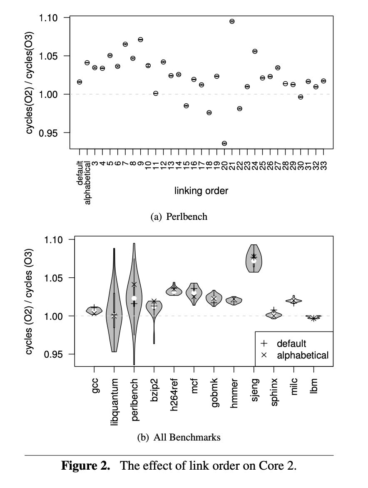
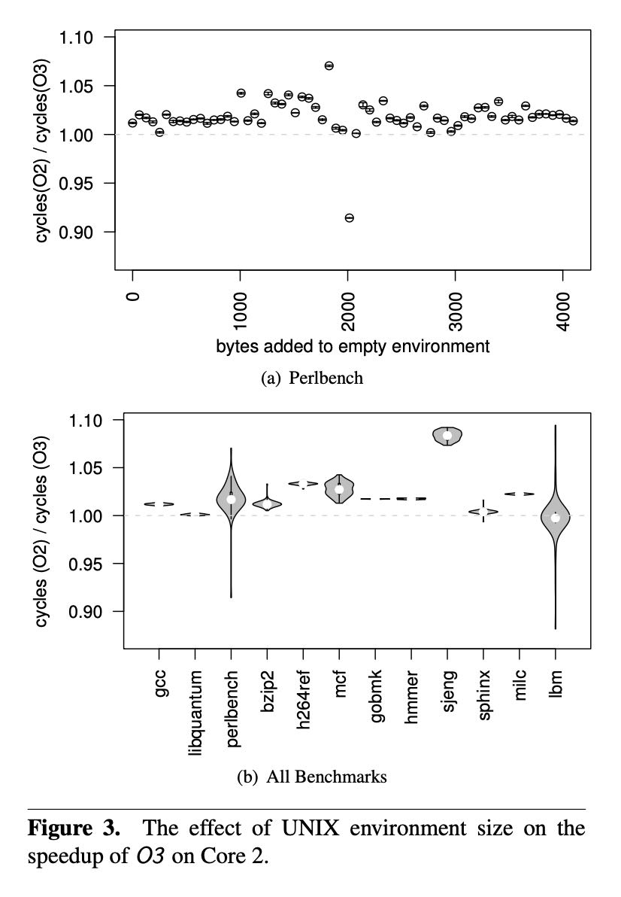

Producing Wrong Data Without Doing Anything Obviously Wrong!
Producing Wrong Data Without Doing Anything Obviously Wrong!
快速看了一下这篇文章：影响程序性能的因素非常非常多，容易导致我们得出某种错误结论，认为某个改进是有效果的。而实际上某种改进并不显著，甚至因为只是在我们测试环境下某些因素导致有效果，而在其他环境下则会造成性能下降。
实验中想验证一下O2/O3的改进效果，但是在不同的Unix environment size以及link order下进行实验，发现bias比较严重
We show that there are no obvious ways of avoiding mea- surement bias because measurement bias is unpredictable. For example, the best link order on one microprocessor is often not the best link order on another microprocessor and increasing the UNIX environment size does not monotoni- cally increase (or decrease) the benefit of the O3 optimiza- tions. Worse, because hardware manufacturers do not reveal full details of their hardware it is unlikely that we can pre- cisely determine the causes of measurement bias.
建议实验中应该增加更多的随机性来排除干扰因素，使用更加广泛的test workloads, 以及进行因果性分析（至少从理论上可以解释清楚）
Finally, this paper discusses and demonstrates one tech- nique for avoiding measurement bias and one technique for detecting measurement bias. Because natural and social sci- ences routinely deal with measurement bias, we derived two techniques directly from these sciences. The first technique, experimental setup randomization (or setup randomization for short), runs each experiment in many different experi- mental setups; these experiments result in a distribution of observations which we summarize using statistical methods to eliminate or reduce measurement bias. The second tech- nique, causal analysis [16], establishes confidence that the outcome of the performance analysis is valid even in the presence of measurement bias.
关于measurement bias这事情不仅在计算机上，在医学统计上也很常见。16%出现不一致的结果，16%出现过大夸大的结果。
Measurement bias is well known to medical and other sci- ences. For example, Ioannidis [9] reports that in a survey of 49 highly-cited medical articles, later work contradicted 16% of the articles and found another 16% had made overly strong claims. The studies that contradicted the original stud- ies used more subjects and random trials and thus probably suffered less from measurement bias.
不同的link order下O2/O3的加速比

不同unix env size下O2/O3加速比

作者还测试了不同的编译器以及不同机器上的加速比。可以看到其实收到link order/unix env size影响比较大，如果不仔细分析的话，很容易得错误的结论（或者是得出某个错误数值）。